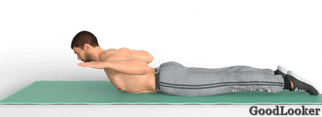

В последний день плана тренировок дома для мужчин без инвентаря входят сложные функциональные упражнения, обеспечивающие силовую и кардио-нагрузку. Это поможет вам качественно поработать над рельефом тела. Выполняйте упражнения осознанно, чтобы стимулировать рост мышц и значительно увеличить силу тела.
Тренируйтесь подходами или по круговой системе на ваш выбор. В случае подходов повторите каждое упражнение по 2-3 подхода и только затем переходите к следующему упражнению. В случае круговой системы выполните все упражнения последовательно по одному подходу и затем повторите все упражнения в 2 или 3 круга. Тренироваться можно по таймеру или считая повторения.
Поставьте ноги немного шире плеч, руки сложите перед собой. Выполните классическое приседание до параллели с полом, а на подъеме поднимите одно колено вверх, опуская руки синхронно вниз. Снова сделайте приседание и на следующем подъеме поднимите вверх колено другой ноги. Комплексное упражнение позволяет глубоко проработать мышцы бедер, ног и ягодиц, а также обеспечивает кардио-нагрузку и способствует избавлению от живота.
Сколько выполнять: 14-16 приседаний всего.
Встаньте прямо, прямые руки поднимите вверх, ладони направьте вперед. Поднимите одну ногу до параллели с полом, не сгибая ее в колене. Одновременно опустите к поднятой ноге обе руки, стараясь коснуться носка стопы. Вернитесь в исходное положение и на следующем повторении поднимите другую ногу. Эффективное функциональное упражнение входит в тренировку для мужчин в домашних условиях для общего сжигания жировой прослойки, а также для укрепления мышц живота, плеч и ног.
Сколько выполнять: 18-20 подъемов ног всего.
Встаньте в упор лежа, ладони ширине плеч. Выполните классическое отжимание до параллели плеч с полом. Локти направляйте назад. На подъеме переместите ладони немного ближе к корпусу и следующее отжимание сделайте с узкой постановкой рук. Смена положения ладоней не только усложняет упражнение, но и позволяет задействовать более широкий спектр мышечных групп. В результате вы глубоко прорабатываете руки, плечи, мышцы спины и груди.
Сколько выполнять: 12-14 отжиманий всего.
Лягте на спину, руки положите за голову, ноги выпрямите. Поднимите голову, руки и лопатки, напрягая пресс, приподнимите ноги на небольшую высоту. Из этого положения выполняйте скручивания в каждую сторону, приводя к корпусу противоположное колено. Велосипед – одно из самых действенных упражнений на пресс. Обязательно включите его в программу тренировок для мужчин без инвентаря, если хотите глубоко проработать мышцы живота и кора.
Сколько выполнять: 18-20 касаний колена на обе стороны всего.

Встаньте в упор лежа, затем приведите одно колено к груди и коснитесь его противоположной ладонью. Вернитесь обратно и приведите другое колено к груди, точно так же касаясь его противоположной ладонью. Теперь встаньте из упора лежа на ноги, поднимая руки вверх. Снова примите положение планки и повторите упражнение. Функциональное упражнение из тренировки дома для мужчин без инвентаря поможет вам прокачать кор, привести в тонус руки, а также укрепить сердечную мышцу благодаря легкой кардио-нагрузке.
Сколько выполнять: 10-12 повторений.
Поставьте ноги на ширине плеч, руки сложите у груди. Выполните обыкновенное приседания до параллели с полом. На подъеме сделайте шаг назад одной ногой и опуститесь в выпад. Вернитесь обратно и повторите приседание. На следующем подъеме выполните выпад другой ногой. Комплексное упражнение обеспечивает усиленную нагрузку на мышцы, интенсивно прорабатывая квадрицепсы, бицепсы бедер, ягодичные мышцы, а также задействует пресс и кор.
Сколько выполнять: 14-16 приседаний всего.
Встаньте в упор лежа, руки на ширине плеч, спина прямая. Выполните классическое отжимание, опускаясь до параллели плеч с полом. В активной фазе отжимания согните правую ногу в колене и приведите его к правому плечу с внешней стороны корпуса. При подъеме возвратите ногу обратно. Снова опуститесь в отжимание и теперь приведите левую ногу к плечу. Сложное упражнение из программы тренировок для мужчин без инвентаря позволит вам прокачать силу и выносливость, укрепить все крупные мышцы тела, включая глубокие постуральные.
Сколько выполнять: 10-12 отжиманий.

Лягте на живот, руки выпрямите перед собой, ноги вытяните произвольно. Поднимите голову и корпус вверх, из этого положения согните руки в локтях, направляя их назад. В крайней точке движения с силой сводите лопатки, нагружая мышцы спины. Во время упражнения концентрируйтесь на работе спины, чтобы хорошо проработать мышцы. Упражнение задействует широчайшие, трапециевидные и более мелкие мышцы спины, а также укрепляет верх корпуса.
Сколько выполнять: 12-15 повторений.

Лягте на спину, руки разведите в стороны, ноги поднимите вверх. Оторвите от пола голову и верхнюю часть спины, скручиваясь к прямым ногам, ладонями тянитесь к стопам. Отрывайте от пола только лопатки, в активной фазе движения напрягайте пресс. Классическое упражнение включено в тренировку дома для мужчин с собственным весом, так как помогает глубоко проработать прямую, поперечную и косые мышцы живота, а также укрепить кор.
Сколько выполнять: 12-15 повторений.

Примите положение боковой планки на предплечье, свободную руку поставьте на талию. Тело вытянуто в одну линию, свободная нога лежит на опорной. Поднимите верхнюю ногу и выполните ею кик вперед с полной амплитудой. Возвращаясь обратно, заведите ногу как можно дальше назад. После всех повторений выполните упражнение для другой ноги. Усложненная боковая планка не только помогает укрепить косые мышцы пресса, но также интенсивно прорабатывает ноги.
Сколько выполнять: 10-12 повторений сначала на одну сторону, потом столько же на другую.